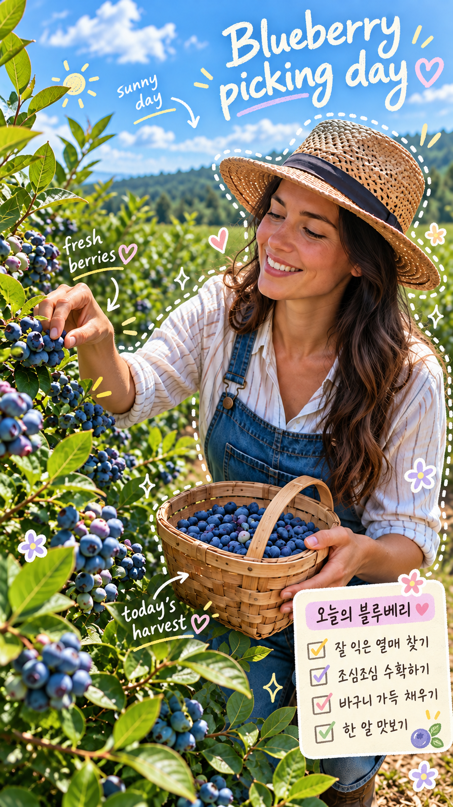

BEFORE.png)
AFTER

사용한 Prompt
전체 프롬프트 보기
원본 사진을 유지한 채, 감성적인 스크랩북/다이어리 꾸미기 스타일로 편집해줘. 컨셉: - 밝고 사랑스럽고 감성적인 “오늘의 기록” 분위기 - 사진 위에 손글씨 제목, 짧은 메모, 화살표, 점선 아웃라인, 하트, 별, 꽃, 체크리스트 카드 추가 - 실제 사진 + 손그림 낙서가 자연스럽게 섞인 스타일 - 인물과 배경은 최대한 유지하고, 장식은 사진을 더 예쁘게 보이게 하는 수준으로만 추가 반드시 포함할 요소: - 큰 메인 타이틀: "Blueberry picking day" - 짧은 메모 3개: "sunny day", "fresh berries", "today's harvest" - 체크리스트 카드 제목: "오늘의 블루베리" - 체크리스트 4개: "잘 익은 열매 찾기", "조심조심 수확하기", "바구니 가득 채우기", "한 알 맛보기" 디자인 규칙: - 제목은 상단의 깨끗한 공간에 크게 - 핵심 피사체 주변은 흰색 점선 아웃라인 - 주요 소품/오브젝트에는 손그림 화살표와 작은 메모 추가 - 오른쪽 아래 또는 빈 공간에 작은 체크리스트 카드 배치 - 작은 하트, 꽃, 별, 반짝이, 밑줄 등으로 포인트 추가 - 색상은 흰색, 크림색, 연노랑, 연핑크, 연보라, 하늘색 계열의 파스텔 톤 - 글씨는 귀엽고 자연스러운 손글씨 느낌 - 전체적으로 과하지 않게, 완성도 있는 SNS 감성 편집처럼 중요: - 원본 인물의 얼굴, 포즈, 의상, 소품은 유지 - 원본 사진의 주제와 분위기를 해치지 말 것 - 사진보다 장식이 더 튀지 않도록 균형 있게 구성